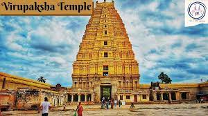
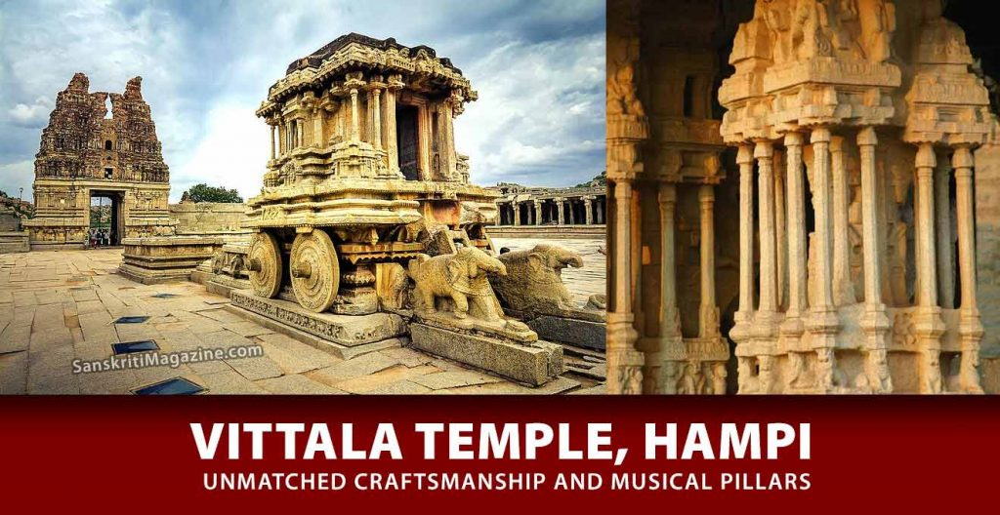
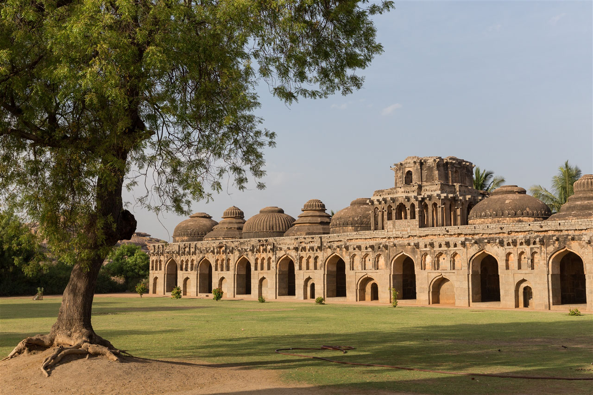
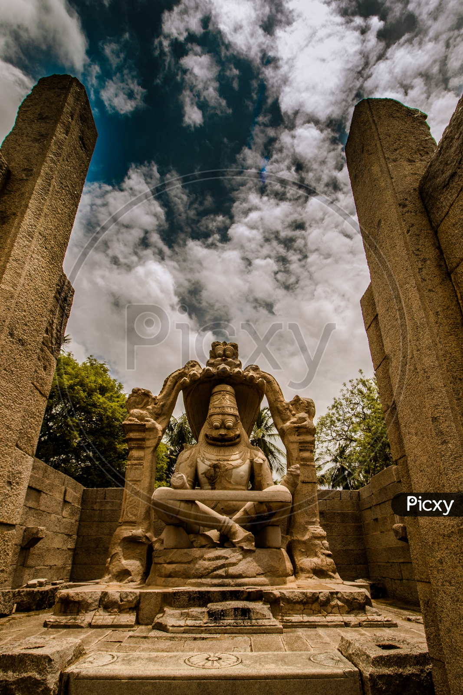
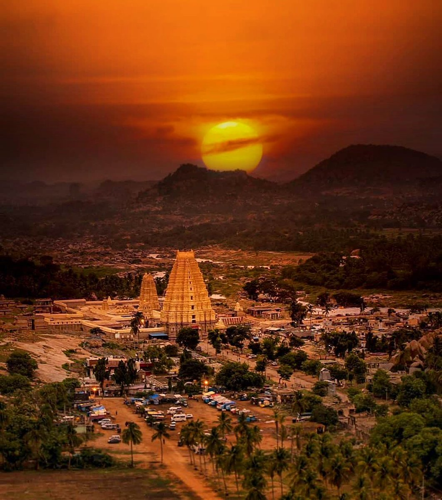

Hampi or Hampe, also referred to as the Group of Monuments at Hampi, is a UNESCO World Heritage Site located in Hampi (City), Vijayanagara district, east-central Karnataka, India.[2] Hampi predates the Vijayanagara Empire; it is mentioned in the Ramayana and the Puranas of Hinduism as Pampa Devi Tirtha Kshetra.[3][4] Hampi continues to be an important religious centre, housing the Virupaksha Temple, an active Adi Shankara-linked monastery and various monuments belonging to the old city.
Hampi was the capital of the Vijayanagara Empire in the 14th century.[3] It was a fortified city. Chronicles left by Persian and European travellers, particularly the Portuguese, say that Hampi was a prosperous, wealthy and grand city near the Tungabhadra River, with numerous temples, farms and trading markets. By 1500 CE, Hampi-Vijayanagara was the world's second-largest city, after Beijing, and probably India's richest at that time, attracting traders from Persia and Portugal.[7][8] The Vijayanagara Empire was defeated by a coalition of Muslim sultanates; its capital was conquered, pillaged and destroyed by sultanate armies in 1565, after which Hampi remained in ruins.[3][5][9]
There is information about Hampi. The Hampi in the ancient city of Karnataka is completely built of burnt bricks, and local granite from that also placed lime mortar. It is recognised that the architecture of Hampi is inspired by and is similar to the Indo Islamic Architecture. There were several distinguishing characteristics of Hampi’s architecture that set it apart from other ancient cities. Karnataka’s Hampi was an ancient and well-fortified city dating back thousands of years. And ruins of Hampi in India are famous worldwide. At Hampi, neither mortar nor cementing agents were found in the architecture or the walls. In Hampi, they constructed elaborate orchards and various pleasure gardens with sculptures and motifs, including the lotus and the corbels. Their purpose was to wedge them together through interlocking. The buildings in the royal complex had very grand arches, halls with huge columns and domes with niches for holding sculptures. It was a beautiful and prosperous city with several temples, farms and markets attracting traders from Portugal and Persia. The Vittala Temple Complex is a very well-known and famous temple at Hampi. Hampi was built in the 16th century, and the temple is dominated by 56 monolithic pillars, known as the Musical Pillars. The Virupaksha Temple, built in the 15th century at the western end of Hampi Bazaar, is the oldest in Hampi and has a 50-metre tall gopuram.
Experience the stunning beauty of Hampi through this video





The nearest airport to Hampi is Hubli Airport, which is approximately 160 km away. From the airport, you can hire a taxi or take a bus to reach Hampi.
Hospet Junction is the nearest railway station to Hampi, located at a distance of around 13 km. Many trains connect Hospet with major cities in India. From Hospet, you can hire an auto-rickshaw or take a bus to reach Hampi.
Hampi is well-connected by road to various cities in Karnataka and neighboring states. You can reach Hampi by bus or by hiring a taxi or self-drive car. The roads leading to Hampi are scenic and offer a picturesque journey.